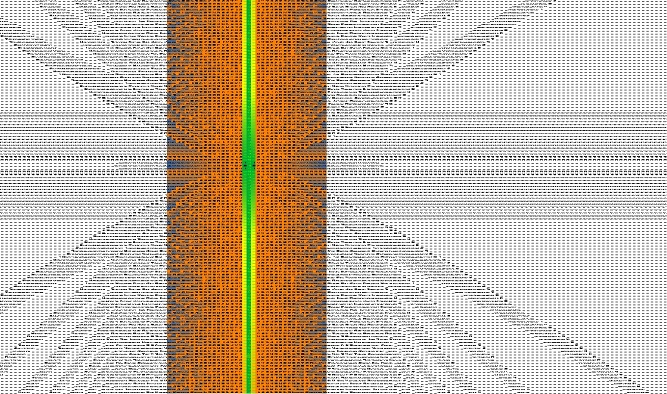

«"Тогда пробуждается Творец на ступенях Своих и ударяет по небосводам, и содрогаются двенадцать тысяч миров, и разносится Его призыв и плач. Как сказано: "Творец из высей возгремит, из святого жилища Своего вознесет голос Свой, громко взывает Он над обителью Своей", и Он помнит Исраэль", что они в изгнании, "и роняет две слезы в великое море, и тогда вспыхивает пламя одно на северной стороне. И один ветер на северной стороне соединяется с этим пламенем, и это пламя начинает распространяться по миру. И в этот час разделяется ночь, и пламя ударяет по крыльям петуха, и он кричит. И тогда входит Творец в Эденский сад"».
Книга Зоар, Ваякель, п. 21, том 5СДЕЛАЕМ И УСЛЫШИМ!!